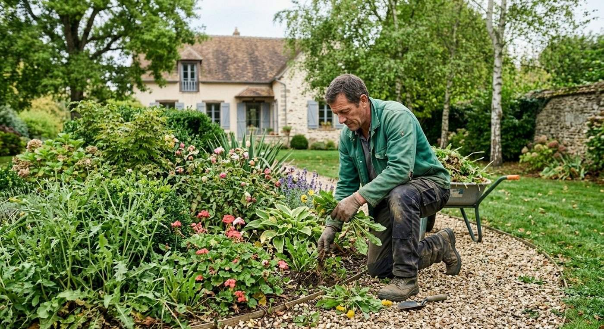

Création de jardins
Massifs, pelouses et allées : le jardin se pense selon le terrain et l'usage que vous en avez.
Prestations
Création, plantations, engazonnement, tonte et taille : l'aménagement paysager à Saint-Germain-de-la-Grange et aux alentours.



Aménager
Massifs, pelouses et allées : le jardin se pense selon le terrain et l'usage que vous en avez.

Arbustes, haies et vivaces plantés dans les massifs.
Entretenir
Un jardin demande un suivi régulier, ponctuel ou récurrent, selon vos besoins.


Votre projet
Appelez directement ou décrivez votre jardin en quelques lignes.
Appeler le 06 19 09 58 74